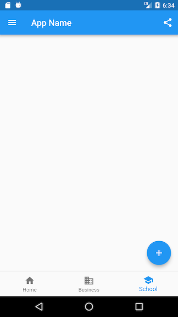
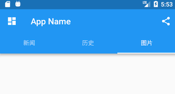

5.6 Scaffold、TabBar、底部导航¶
Material组件库提供了丰富多样的组件，本节介绍一些常用的组件，其余的读者可以自行查看文档或Flutter Gallery中Material组件部分的示例。
Flutter Gallery是Flutter官方提供的Flutter Demo，源码位于flutter源码中的examples目录下，笔者强烈建议用户将Flutter Gallery示例跑起来，它是一个很全面的Flutter示例应用，是非常好的参考Demo，也是笔者学习Flutter的第一手资料。
5.6.1 Scaffold¶
一个完整的路由页可能会包含导航栏、抽屉菜单(Drawer)以及底部Tab导航菜单等。如果每个路由页面都需要开发者自己手动去实现这些，这会是一件非常麻烦且无聊的事。幸运的是，Flutter Material组件库提供了一些现成的组件来减少我们的开发任务。Scaffold是一个路由页的骨架，我们使用它可以很容易地拼装出一个完整的页面。
示例¶
我们实现一个页面，它包含：
一个导航栏
导航栏右边有一个分享按钮
有一个抽屉菜单
有一个底部导航
右下角有一个悬浮的动作按钮
最终效果如图5-18、图5-19所示：
 
实现代码如下：
class ScaffoldRoute extends StatefulWidget {
@override
_ScaffoldRouteState createState() => _ScaffoldRouteState();
}
class _ScaffoldRouteState extends State<ScaffoldRoute> {
int _selectedIndex = 1;
@override
Widget build(BuildContext context) {
return Scaffold(
appBar: AppBar( //导航栏
title: Text("App Name"),
actions: <Widget>[ //导航栏右侧菜单
IconButton(icon: Icon(Icons.share), onPressed: () {}),
],
),
drawer: new MyDrawer(), //抽屉
bottomNavigationBar: BottomNavigationBar( // 底部导航
items: <BottomNavigationBarItem>[
BottomNavigationBarItem(icon: Icon(Icons.home), title: Text('Home')),
BottomNavigationBarItem(icon: Icon(Icons.business), title: Text('Business')),
BottomNavigationBarItem(icon: Icon(Icons.school), title: Text('School')),
],
currentIndex: _selectedIndex,
fixedColor: Colors.blue,
onTap: _onItemTapped,
),
floatingActionButton: FloatingActionButton( //悬浮按钮
child: Icon(Icons.add),
onPressed:_onAdd
),
);
}
void _onItemTapped(int index) {
setState(() {
_selectedIndex = index;
});
}
void _onAdd(){
}
}
上面代码中我们用到了如下组件：
| 组件名称 | 解释 | | ——————– | ————– | | AppBar | 一个导航栏骨架 | | MyDrawer | 抽屉菜单 | | BottomNavigationBar | 底部导航栏 | | FloatingActionButton | 漂浮按钮 |
下面我们来分别介绍一下它们。
5.6.2 AppBar¶
AppBar是一个Material风格的导航栏，通过它可以设置导航栏标题、导航栏菜单、导航栏底部的Tab标题等。下面我们看看AppBar的定义：
AppBar({
Key key,
this.leading, //导航栏最左侧Widget，常见为抽屉菜单按钮或返回按钮。
this.automaticallyImplyLeading = true, //如果leading为null，是否自动实现默认的leading按钮
this.title,// 页面标题
this.actions, // 导航栏右侧菜单
this.bottom, // 导航栏底部菜单，通常为Tab按钮组
this.elevation = 4.0, // 导航栏阴影
this.centerTitle, //标题是否居中
this.backgroundColor,
... //其它属性见源码注释
})
如果给Scaffold添加了抽屉菜单，默认情况下Scaffold会自动将AppBar的leading设置为菜单按钮（如上面截图所示），点击它便可打开抽屉菜单。如果我们想自定义菜单图标，可以手动来设置leading，如：
Scaffold(
appBar: AppBar(
title: Text("App Name"),
leading: Builder(builder: (context) {
return IconButton(
icon: Icon(Icons.dashboard, color: Colors.white), //自定义图标
onPressed: () {
// 打开抽屉菜单
Scaffold.of(context).openDrawer();
},
);
}),
...
)
代码运行效果如图5-20所示：
可以看到左侧菜单已经替换成功。
代码中打开抽屉菜单的方法在ScaffoldState中，通过Scaffold.of(context)可以获取父级最近的Scaffold 组件的State对象。
TabBar¶
下面我们通过“bottom”属性来添加一个导航栏底部Tab按钮组，将要实现的效果如图5-21所示：

Material组件库中提供了一个TabBar组件，它可以快速生成Tab菜单，下面是上图对应的源码：
class _ScaffoldRouteState extends State<ScaffoldRoute>
with SingleTickerProviderStateMixin {
TabController _tabController; //需要定义一个Controller
List tabs = ["新闻", "历史", "图片"];
@override
void initState() {
super.initState();
// 创建Controller
_tabController = TabController(length: tabs.length, vsync: this);
}
@override
Widget build(BuildContext context) {
return Scaffold(
appBar: AppBar(
... //省略无关代码
bottom: TabBar( //生成Tab菜单
controller: _tabController,
tabs: tabs.map((e) => Tab(text: e)).toList()
),
),
... //省略无关代码
}
上面代码首先创建了一个TabController ，它是用于控制/监听Tab菜单切换的。接下来通过TabBar生成了一个底部菜单栏，TabBar的tabs属性接受一个Widget数组，表示每一个Tab子菜单，我们可以自定义，也可以像示例中一样直接使用Tab 组件，它是Material组件库提供的Material风格的Tab菜单。
Tab组件有三个可选参数，除了可以指定文字外，还可以指定Tab菜单图标，或者直接自定义组件样式。Tab组件定义如下：
Tab({
Key key,
this.text, // 菜单文本
this.icon, // 菜单图标
this.child, // 自定义组件样式
})
开发者可以根据实际需求来定制。
TabBarView¶
通过TabBar我们只能生成一个静态的菜单，真正的Tab页还没有实现。由于Tab菜单和Tab页的切换需要同步，我们需要通过TabController去监听Tab菜单的切换去切换Tab页，代码如：
_tabController.addListener((){
switch(_tabController.index){
case 1: ...;
case 2: ... ;
}
});
如果我们Tab页可以滑动切换的话，还需要在滑动过程中更新TabBar指示器的偏移！显然，要手动处理这些是很麻烦的，为此，Material库提供了一个TabBarView组件，通过它不仅可以轻松的实现Tab页，而且可以非常容易的配合TabBar来实现同步切换和滑动状态同步，示例如下：
Scaffold(
appBar: AppBar(
... //省略无关代码
bottom: TabBar(
controller: _tabController,
tabs: tabs.map((e) => Tab(text: e)).toList()),
),
drawer: new MyDrawer(),
body: TabBarView(
controller: _tabController,
children: tabs.map((e) { //创建3个Tab页
return Container(
alignment: Alignment.center,
child: Text(e, textScaleFactor: 5),
);
}).toList(),
),
... // 省略无关代码
)
运行后效果如图5-22所示：

现在，无论是点击导航栏Tab菜单还是在页面上左右滑动，Tab页面都会切换，并且Tab菜单的状态和Tab页面始终保持同步！那它们是如何实现同步的呢？细心的读者可能已经发现，上例中TabBar和TabBarView的controller是同一个！正是如此，TabBar和TabBarView正是通过同一个controller来实现菜单切换和滑动状态同步的，有关TabController的详细信息，我们不在本书做过多介绍，使用时读者直接查看SDK即可。
另外，Material组件库也提供了一个PageView 组件，它和TabBarView功能相似，读者可以自行了解一下。
5.6.3 抽屉菜单Drawer¶
Scaffold的drawer和endDrawer属性可以分别接受一个Widget来作为页面的左、右抽屉菜单。如果开发者提供了抽屉菜单，那么当用户手指从屏幕左（或右）侧向里滑动时便可打开抽屉菜单。本节开始部分的示例中实现了一个左抽屉菜单MyDrawer，它的源码如下：
class MyDrawer extends StatelessWidget {
const MyDrawer({
Key key,
}) : super(key: key);
@override
Widget build(BuildContext context) {
return Drawer(
child: MediaQuery.removePadding(
context: context,
//移除抽屉菜单顶部默认留白
removeTop: true,
child: Column(
crossAxisAlignment: CrossAxisAlignment.start,
children: <Widget>[
Padding(
padding: const EdgeInsets.only(top: 38.0),
child: Row(
children: <Widget>[
Padding(
padding: const EdgeInsets.symmetric(horizontal: 16.0),
child: ClipOval(
child: Image.asset(
"imgs/avatar.png",
width: 80,
),
),
),
Text(
"Wendux",
style: TextStyle(fontWeight: FontWeight.bold),
)
],
),
),
Expanded(
child: ListView(
children: <Widget>[
ListTile(
leading: const Icon(Icons.add),
title: const Text('Add account'),
),
ListTile(
leading: const Icon(Icons.settings),
title: const Text('Manage accounts'),
),
],
),
),
],
),
),
);
}
}
抽屉菜单通常将Drawer组件作为根节点，它实现了Material风格的菜单面板，MediaQuery.removePadding可以移除Drawer默认的一些留白（比如Drawer默认顶部会留和手机状态栏等高的留白），读者可以尝试传递不同的参数来看看实际效果。抽屉菜单页由顶部和底部组成，顶部由用户头像和昵称组成，底部是一个菜单列表，用ListView实现，关于ListView我们将在后面“可滚动组件”一节详细介绍。
5.6.4 FloatingActionButton¶
FloatingActionButton是Material设计规范中的一种特殊Button，通常悬浮在页面的某一个位置作为某种常用动作的快捷入口，如本节示例中页面右下角的”➕”号按钮。我们可以通过Scaffold的floatingActionButton属性来设置一个FloatingActionButton，同时通过floatingActionButtonLocation属性来指定其在页面中悬浮的位置，这个比较简单，不再赘述。
5.6.5 底部Tab导航栏¶
我们可以通过Scaffold的bottomNavigationBar属性来设置底部导航，如本节开始示例所示，我们通过Material组件库提供的BottomNavigationBar和BottomNavigationBarItem两种组件来实现Material风格的底部导航栏。可以看到上面的实现代码非常简单，所以不再赘述，但是如果我们想实现如图5-23所示效果的底部导航栏应该怎么做呢？

Material组件库中提供了一个BottomAppBar 组件，它可以和FloatingActionButton配合实现这种“打洞”效果，源码如下：
bottomNavigationBar: BottomAppBar(
color: Colors.white,
shape: CircularNotchedRectangle(), // 底部导航栏打一个圆形的洞
child: Row(
children: [
IconButton(icon: Icon(Icons.home)),
SizedBox(), //中间位置空出
IconButton(icon: Icon(Icons.business)),
],
mainAxisAlignment: MainAxisAlignment.spaceAround, //均分底部导航栏横向空间
),
)
可以看到，上面代码中没有控制打洞位置的属性，实际上，打洞的位置取决于FloatingActionButton的位置，上面FloatingActionButton的位置为：
floatingActionButtonLocation: FloatingActionButtonLocation.centerDocked,
所以打洞位置在底部导航栏的正中间。
BottomAppBar的shape属性决定洞的外形，CircularNotchedRectangle实现了一个圆形的外形，我们也可以自定义外形，比如，Flutter Gallery示例中就有一个“钻石”形状的示例，读者感兴趣可以自行查看。